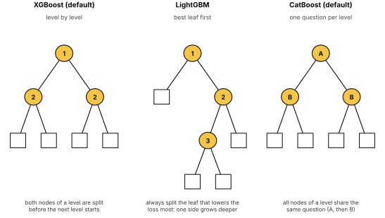
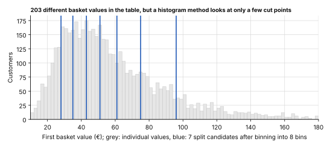
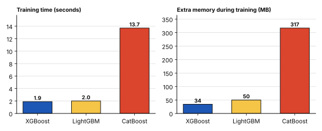

Tree-based models
XGBoost vs. LightGBM vs. CatBoost: What Is the Difference?
XGBoost, LightGBM and CatBoost all build a model by adding small trees that correct the errors of the trees before them. If you know how gradient boosting and XGBoost work, you know the core idea of all three. The differences lie in the engineering: how a tree grows, how splits are searched, and how categorical columns are handled.
We explain each library, compare them side by side and test them on the same online-shop table. This is the third of three articles on boosting; Boosting: Learning from the Mistakes of Previous Trees gives the overview. There is no winner here: the test shows three equally accurate models.
In this article
What the Three Libraries Share
All three train trees one after another. Each new tree is fitted to the gradient of the loss, which for the usual classification loss is the part of the outcome that the current model has not yet explained, and a small fraction of it, set by the learning rate, is added to the prediction. All three accept the same kinds of settings for the number of trees, the learning rate, the tree size and subsampling, all three stop early when a check set no longer improves, and all three return a probability for every customer.
So the question is never “which one is real boosting?”. Every library has to answer the same three practical questions, and each gives a different answer:
- How is a tree grown? Level by level, leaf by leaf, or with the same question for a whole level.
- How are split candidates found? By checking every distinct value, or by sorting the values into a limited number of bins first.
- What happens to categories? They can be turned into numbers beforehand, split on directly, or converted with a statistic that avoids leaking the outcome.
Chart 1 shows the first question. The trees have four leaves each, and the numbers and letters show in which order the splits are made.

XGBoost: Level by Level, Carefully Regularized
How trees are grown
By default XGBoost grows a tree depth-wise: it splits every node of one level before it moves on to the next, until the limit max_depth is reached (default 6). The result is a balanced tree whose size is easy to predict. With grow_policy="lossguide" it can instead split the node with the largest loss reduction first, which is the leaf-wise strategy described in the next section.
How splits are found
XGBoost offers three tree methods. exact tries every distinct value of every feature as a split point, which is precise but slow on large tables. approx and hist first group the values into bins and test only the bin borders. The hist method, with up to 256 bins by default, is what tree_method="auto" selects today, so a modern XGBoost already works with histograms. This matters for comparisons: “LightGBM uses histograms, XGBoost does not” was true years ago and is not true now.
Chart 2 shows what binning does to our first-basket column. The table has 203 different basket values, which would be 202 places to cut. After binning into eight groups only seven remain, and the library sums the gradients per bin once instead of looking at every customer for every candidate split.

Regularization
This is where XGBoost is most explicit, as the previous article showed. The objective charges a penalty γ for every leaf and a penalty λ for large leaf weights, and a split is only made if its gain is larger than γ. Further safeguards are min_child_weight (the smallest total Hessian a leaf may have), the L1 penalty alpha, subsample and colsample_bytree. The defaults are λ = 1, γ = 0 and α = 0.
Categories
XGBoost can split on categorical columns directly when the column has the pandas category type and enable_categorical=True is set. For columns with few categories it tests one-hot splits, and above the limit max_cat_to_onehot it partitions the categories into two groups. This is a feature you switch on, while for CatBoost it is the central design.
Strengths and limits
XGBoost has the longest track record, the most documentation and the widest tooling, and its regularization settings are the most transparent. It is also the most conservative in how trees grow, which makes it predictable. On very large tables or with hundreds of features, it can be slower than LightGBM, and its categorical support is newer than CatBoost’s and has fewer options.
LightGBM: Leaf-Wise Growth and Less Data to Look At
Histograms and histogram subtraction
LightGBM was built around histograms from the start. Values are sorted into at most max_bin bins (default 255), and finding the best split then costs a pass over the bins instead of over the customers. A second trick saves further work: once the histogram of a parent node and of one child are known, the histogram of the other child is the difference of the two. Only the smaller child has to be counted from the data. A small bin count also lets the data be stored in compact integer types, which saves memory.
Leaf-wise growth
LightGBM’s default is to grow leaf-wise: at every step it looks at all current leaves and splits the one whose split lowers the loss the most. With the same number of leaves, this usually reaches a lower training loss than level-wise growth, because splits are spent where they help. The price is that a tree can become deep and lopsided, and on a small table it can start to fit noise. The main control is therefore not the depth but num_leaves, with max_depth and min_data_in_leaf as additional brakes. When you compare libraries, a depth of 3 in XGBoost corresponds to at most 8 leaves, so we use num_leaves=8 for LightGBM.
GOSS and EFB
The LightGBM paper adds two ideas to speed things up on large data. Gradient-based One-Side Sampling (GOSS) keeps all customers with a large gradient, the ones the model still gets badly wrong, and only a random sample of those with a small gradient, whose weight is scaled up to make up for the missing ones. The split gain is then estimated from a smaller sample without losing much accuracy. Exclusive Feature Bundling (EFB) combines features that are almost never non-zero at the same time, as with one-hot columns, into one column, which cuts the number of features the histograms have to cover. Both matter mostly for very large or very sparse tables, and our table of five columns is too small to show them.
Categories
LightGBM can split on categorical columns without one-hot encoding. Its documentation explains that for a column with k categories there are 2k−1 − 1 possible ways to divide them into two groups, and that it finds the best one efficiently by sorting the categories by the ratio of summed gradients to summed Hessians and then searching along that order. In scikit-learn style code the column needs the pandas category type.
Strengths and limits
LightGBM is usually the first choice when a table is large and training time matters. Its weak spots are small tables, where leaf-wise growth overfits more easily, and the fact that num_leaves has to be set with care and not copied from a depth setting.
CatBoost: Built Around Categorical Features
Symmetric trees
By default (grow_policy="SymmetricTree") CatBoost builds symmetric trees, also called oblivious trees: all nodes on one level ask the same question. A tree of depth 3 is then just a list of three questions, such as “first basket above 42.50? delivery time of five days or more? opted in to email?”, and every customer ends up in one of eight leaves. The structure is rigid, which limits how freely one tree can adapt, and it keeps predictions cheap. The default depth is 6. Depth-wise and leaf-wise growth are available as options.
Categories and ordered target statistics
A simple way to use a category in a tree is to replace it by the average outcome of its customers, for example the share of newsletter customers who ordered again. There is a trap: the average includes the customer’s own outcome. For a category with few customers, the number almost gives away the answer, the model trusts it during training and does worse on new customers. This is a form of target leakage.
CatBoost avoids it with ordered target statistics. It shuffles the customers into a random order and computes each customer’s value only from the customers before them in that order, smoothed with a prior so that the first customers do not get 0 or 1. The table shows the idea for eight customers in one random order, with a prior of 0.5 and a weight of 1. The values are made up for this illustration and are not part of our dataset.
| Customer (in random order) | Channel | Ordered again? | Earlier customers with this channel | Ordered statistic | Plain average of channel |
|---|---|---|---|---|---|
| 1 | search ads | 0 | 0 | 0.50 | 0.25 |
| 2 | newsletter | 1 | 0 | 0.50 | 0.75 |
| 3 | search ads | 0 | 1 | 0.25 | 0.25 |
| 4 | newsletter | 1 | 1 | 0.75 | 0.75 |
| 5 | search ads | 1 | 2 | 0.17 | 0.25 |
| 6 | newsletter | 0 | 2 | 0.83 | 0.75 |
| 7 | search ads | 0 | 3 | 0.38 | 0.25 |
| 8 | newsletter | 1 | 3 | 0.62 | 0.75 |
The ordered value of customer 3 is (0 + 0.5) ÷ (1 + 1) = 0.25: one earlier search-ads customer, who did not order again, plus the prior. It never looks at customer 3’s own outcome. The plain average in the last column does, and it is the same for all customers of a channel. CatBoost repeats this with several random orders so that the early customers are not always the unlucky ones. It also tries combinations of categorical columns, such as channel and postcode area together, as new features.
Columns with very few categories are handled differently: one_hot_max_size (default 2 on the CPU) sends columns with at most that many values to ordinary one-hot encoding.
Ordered boosting
The same leakage problem can occur in the boosting itself: the residuals used to fit a tree are calculated by a model that has already seen the same customers. The CatBoost paper calls the resulting bias prediction shift and proposes ordered boosting, in which a customer’s residual comes from a model that was trained without that customer. In the library this is boosting_type="Ordered". The documentation says it usually gives better quality on small datasets but can be slower than Plain, and that on the CPU the default is Plain. So a default CatBoost model does not use ordered boosting unless you ask for it, although it does use ordered statistics for the categories.
Strengths and limits
CatBoost is strong when many columns are categories, especially with many levels, and its defaults need less tuning than the other two. In return, the conversion of categories costs time and memory, as the test below shows, and the rigid trees can need more rounds than the others to reach the same accuracy.
The Three Side by Side
The table summarizes the points above. The rows on speed and memory describe typical behaviour and our own measurements further down, and they depend strongly on the data.
| XGBoost | LightGBM | CatBoost | |
|---|---|---|---|
| Tree growth | Level by level (leaf-wise optional) | Leaf by leaf, limited by num_leaves | Symmetric trees (other options available) |
| Categorical columns | Native, must be switched on with enable_categorical | Native, best split of the categories into two groups | Central feature: ordered target statistics, one-hot for few levels, combinations |
| Training speed | Fast with hist | Fast, often the fastest on very large or wide tables | Often the slowest, mainly with many categories |
| Memory | Low in our test | Low in our test; compact bins by design | Highest in our test |
| Regularization | Explicit: λ, γ, α, min_child_weight | Mainly num_leaves, min_data_in_leaf, L1 and L2 | Symmetric trees, ordered statistics, optional ordered boosting |
| Ease of use | Many settings, very well documented | Few key settings, but num_leaves needs care | Good results with defaults |
| Typical use | Numeric tables, a safe first choice, wide tooling | Large tables, speed matters | Many categorical columns, small to medium tables |
The Same Table, Three Libraries
To compare the libraries fairly, everything that can be equal is equal: the same 5,000 customers, the same split into 3,750 training and 1,250 test customers, the same learning rate of 0.1, a tree size of 3 levels or 8 leaves, 80% row subsampling, early stopping after 20 rounds without improvement on a check set taken from the training data, and two threads each. We start with the five original columns. Install the libraries with pip install xgboost lightgbm catboost. X_fit, X_val, y_fit and y_val are the training and check sets from the previous article; for the second test the two category columns are converted first with X[c] = X[c].astype("category").
from xgboost import XGBClassifier
from lightgbm import LGBMClassifier, early_stopping
from catboost import CatBoostClassifier
xgb = XGBClassifier(
n_estimators=500, learning_rate=0.1, max_depth=3, subsample=0.8,
early_stopping_rounds=20, eval_metric="logloss", random_state=42,
enable_categorical=True, tree_method="hist", n_jobs=2)
xgb.fit(X_fit, y_fit, eval_set=[(X_val, y_val)], verbose=False)
lgbm = LGBMClassifier(
n_estimators=500, learning_rate=0.1, num_leaves=8, subsample=0.8,
subsample_freq=1, random_state=42, n_jobs=2, verbose=-1)
lgbm.fit(X_fit, y_fit, eval_set=[(X_val, y_val)],
eval_metric="binary_logloss", callbacks=[early_stopping(20)])
cat = CatBoostClassifier(
iterations=500, learning_rate=0.1, depth=3, bootstrap_type="Bernoulli",
subsample=0.8, early_stopping_rounds=20, random_seed=42,
thread_count=2, verbose=0, cat_features=cat_cols) # [] for no categories
cat.fit(X_fit, y_fit, eval_set=(X_val, y_val))Two details are easy to miss. LightGBM needs subsample_freq=1 for subsample to have any effect, and CatBoost needs bootstrap_type="Bernoulli" to subsample rows in the same way. The training times below are medians of five fits.
| Five original columns | Test accuracy | AUC | Trees used | Time |
|---|---|---|---|---|
| XGBoost | 79.0% | 0.865 | 95 | 0.05 s |
| LightGBM | 79.1% | 0.865 | 80 | 0.03 s |
| CatBoost | 79.4% | 0.866 | 146 | 0.09 s |
The three models are practically the same. With 1,250 test customers, one accuracy figure is uncertain by about one percentage point, so differences of a few tenths cannot be read as a ranking. The times are tiny on a table of this size, and they say little about larger data.
Our table has only numbers and yes/no columns, which is where CatBoost has no special advantage. To test the categorical handling we add two columns: the acquisition channel (six levels such as search ads, newsletter or referral) and a postcode area (30 levels). These two columns are simulated for this article. They are generated after the original outcome, with a separate random generator, and are linked to the outcome on purpose so that they carry some signal. The original five columns and the outcome are unchanged, and the results above are therefore directly comparable with the earlier articles. XGBoost and LightGBM receive the new columns as pandas category columns, and CatBoost through cat_features.
| With the two category columns | Test accuracy | AUC | Trees used | Time |
|---|---|---|---|---|
| XGBoost | 80.2% | 0.870 | 86 | 0.05 s |
| LightGBM | 79.8% | 0.875 | 89 | 0.04 s |
| CatBoost | 80.2% | 0.875 | 287 | 0.50 s |
All three gain about a percentage point from the new columns, and again the accuracies are within the noise. CatBoost needed the most trees and by far the most time, here about ten times as long as the others, although all three finished in well under a second. We also tried CatBoost with boosting_type="Ordered". It reached 81.0% and an AUC of 0.877 with 241 trees in 0.74 seconds, which is again inside the noise, and it was slower than the default, as the documentation says.
What happens with a larger table?
To see speed and memory more clearly we repeated the test on a larger simulated table of 400,000 customers (300,000 for training), built in the same way, with 200 trees, a learning rate of 0.1, the same tree size and no subsampling or early stopping, so that every library does the same amount of work. Each library ran in its own process on a machine with two CPU cores, and memory is the growth of the process during training. This is one run per library on one machine, so treat it as a rough picture.

On this table, accuracy was again level (81.5%, 81.6% and 81.6%, with an AUC of 0.892, 0.894 and 0.894). XGBoost and LightGBM took about two seconds each, and CatBoost with its category conversion took about 14 seconds and used several times more memory. That is the cost of the ordered statistics, and whether it is worth paying depends on how much the categories matter in your data. We did not test GPUs, much larger tables or tables with hundreds of columns, where the picture can change.
Which One Should You Choose?
A practical order of thought is the following. If your table is mostly numbers and you want a reliable first model with the best documentation, start with XGBoost. If the table is large and training time or memory is the bottleneck, try LightGBM, and set num_leaves and min_data_in_leaf with care on small data. If several columns are categories, especially with many levels, such as city, product or channel, try CatBoost, accept the longer training time and let it handle the columns itself.
In practice, the differences between the three are often smaller than the effect of good features, a sensible validation setup and early stopping. A sound approach is to train all three with comparable settings on your own data, as we did here, and to choose the one that is accurate enough, fast enough and easiest to maintain for your team.
Frequently Asked Questions
Which is better, XGBoost, LightGBM or CatBoost?
None of them is better in every situation. On our customer table the three reach the same accuracy within the noise of the test. What differs is how they get there: speed, memory, how they treat categorical columns and how many settings need attention.
Is LightGBM faster than XGBoost?
It can be, especially on large tables with many features. Since version 2.0, XGBoost also uses histograms by default, which closed much of the gap. On our table of 300,000 training customers both needed about two seconds for 200 trees, so measure on your own data.
Do I need to encode categorical columns for CatBoost?
No. You list the categorical columns in cat_features and pass them as text or integers. LightGBM and XGBoost can also split on categories directly if the column has the pandas category type, but CatBoost is the one built around this task.
Why does CatBoost use symmetric trees?
In a symmetric tree every node on a level asks the same question. That makes the tree a short list of questions that is quick to evaluate, and it limits how freely a single tree can adapt to the training data.
Which library should a beginner start with?
Start with the one that fits your data. For a table of numbers, XGBoost or LightGBM with default settings is a good first try. If many columns are categories such as city, product or channel, try CatBoost first.
Key takeaway
XGBoost, LightGBM and CatBoost are three implementations of the same boosting idea. They differ in how a tree is grown (level by level, leaf by leaf, or with one question per level), in how split candidates are found (histograms are now standard in XGBoost and LightGBM) and in how they treat categories, where CatBoost’s ordered statistics are the most elaborate. On our customer table they are equally accurate within the noise, while CatBoost is slower and uses more memory. Choose by your data and your constraints, not by a general ranking.
Related posts
- AdaBoost Explained: How Models Learn from Their Mistakes The first article of the series.
- Gradient Boosting and XGBoost: From Residuals to Second-Order Optimization The method that all three libraries implement.
- Boosting: Learning from the Mistakes of Previous Trees The overview of the three methods.
- Random Forest: Why Many Trees Beat One The other way to combine many trees.
- Common Logistic Regression Metrics Accuracy, precision, recall and AUC in detail.
References
- Chen and Guestrin (2016), XGBoost: a scalable tree boosting system
- Ke et al. (2017), LightGBM: a highly efficient gradient boosting decision tree
- Prokhorenkova et al. (2017), CatBoost: unbiased boosting with categorical features
- XGBoost documentation: parameters
- LightGBM documentation: features
- CatBoost documentation: common training parameters